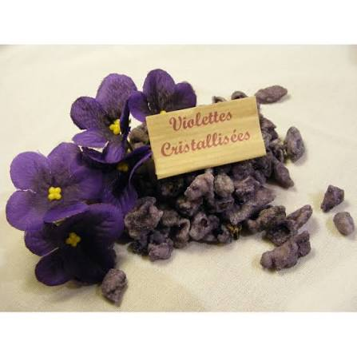

La Liqueur
de
Violette


⟹ L'Élixir Parfumé de la Ville Rose ⟸
Introduite à Toulouse au XIXe siècle, la violette de Toulouse est rapidement devenue l'une des fleurs emblématiques de la ville, cultivée notamment dans les jardins maraîchers du quartier de Saint-Cyprien, le long du canal du Midi et de la Garonne. Sa culture délicate, sous châssis, en a fait une fleur précieuse, longtemps expédiée fraîche vers les grandes villes avant que les maisons locales n'apprennent à la transformer pour en prolonger la vie : bonbons cristallisés, parfums, puis liqueurs.

Confrontée aux maladies qui ont ravagé les cultures au XXe siècle puis à la concurrence de la fleur importée, la violette toulousaine a connu un net déclin avant d'être relancée par une poignée de producteurs et de distillateurs passionnés, soucieux de préserver ce patrimoine floral et gustatif local.
La violette est une fleur fragile : il faut la cueillir à la main, pétale après pétale, avant de pouvoir en capturer le parfum dans l'alcool.
— Tradition des distillateurs toulousainsAujourd'hui, quelques maisons artisanales toulousaines perpétuent la macération et la distillation de la violette pour élaborer une liqueur parfumée, devenue l'un des symboles gourmands de la ville aux côtés du bonbon et du sirop du même nom.
Liqueur pure : dégustée fraîche, en digestif, pour apprécier pleinement son parfum floral.
Cocktails toulousains : quelques traits de liqueur de violette relèvent coupes de crémant et cocktails locaux d'une note florale et d'une teinte mauve caractéristique.
Pâtisserie et confiserie : associée aux bonbons cristallisés, la violette parfume également crèmes, macarons et desserts toulousains.
Produit d'image : devenue un symbole gourmand de la ville rose, la liqueur de violette est aujourd'hui un cadeau et souvenir prisé des visiteurs.
Toulouse et ses abords conservent les traces vivantes de la culture et de la transformation de la violette locale.
Toulouse et le quartier de Saint-Cyprien, historiquement lié à la culture maraîchère de la violette au bord de la Garonne.
Les maisons de confiserie et distillateurs toulousains qui proposent liqueur, bonbons et sirops élaborés à partir de la fleur locale.
La Fête de la Violette rendez-vous printanier permettant de découvrir producteurs, artisans et créations autour de la fleur emblématique.